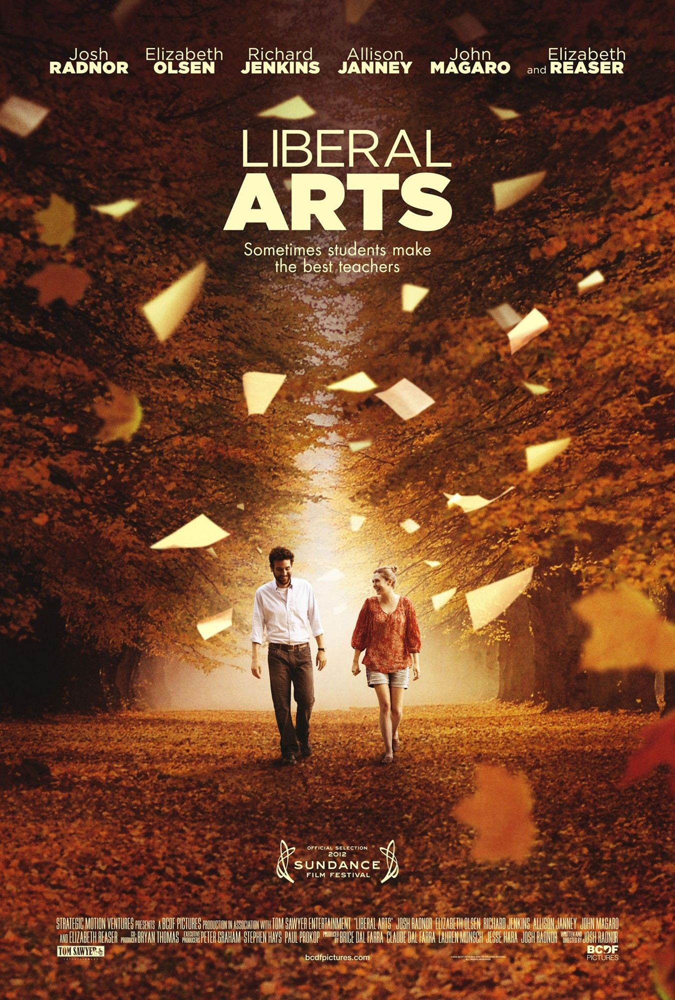

故事講述男主角謝斯一直嚮往人文精神領域方面的想像世界，奈何現實生活中愛情及事業發展均不如預期，令他只顧埋首閱讀，漸漸失去生活動力。剛巧這時他應邀回到大學母校，重遇當年的教授，及認識了新世代的大學生。在這一連串意想不到的相遇後，謝斯重新找到自己生命中努力的方向。
這是一套文藝電影，主要透過對話組成。故事中主角謝斯分別與六個不同的角色展開對話。這六組對話均是片段式的穿插在敍事中，富有追看性。這些對話展示不同角色的人生觀，通過單對單的形式呈現。這安排令觀眾易於代入對話，探究當中所討論的主題。導演透過巧妙的角色配置，安排主角謝斯在故事中與思想及處境非常不同的人物對話，通過每次不同對話組合帶來的對比，突顯他想探討的主題。組合中首先有謝斯在這次回校旅程中的戀愛對象：大學生茜比及茱迪芙教授。茜比未滿二十歲，生活經驗尚淺，但由於思想成熟，所以喜歡跟比自己年長的人相處及拍拖。她認為生活充滿可能性，應探索不同的經驗，不喜歡任何長輩的訓言或道德界線。與她不同的是，茱迪芙教授。她在大學任教超過二十年，確信在現實生活中，真正的愛情並不存在。她不信任人，在交往中與人保持一種疏離的關係，諷刺的是她一直任教的是浪漫主義文學。隨了她們以外，能與謝斯共同切磋精神領域及想像世界的有嬉皮士阿叻及學生阿甸。阿叻思想天馬行空，性格古怪自成一格。他在晚上活動，在校園草地上主動跟途人搭訕，關心他們的身心靈健康。偶然說出啟迪人生的智慧，成為他人生命中的精神導師。阿甸是高材生，因閱讀富哲理的書籍，令思想偏激，最終產生自殺念頭。另外兩位跟謝斯談話的對象同樣熱愛書籍及文學，他們的工作令他們長期生活在文學世界，分別是彼得教授及書店管理員安娜。彼得教授在大學文學系工作了37年，心理上完全依賴大學的教職，文學好像把他困住了。當比他年輕一截的上司不接納他的續約要求時，他接受不了現實而心生沮喪及怨恨。書店管理員安娜雖然長期在書店工作，亦深愛文學，但她常反思現實中自己的生活，透過時刻留意身邊人的需要，最後找到幸福。
電影探討的是人在精神層面上的幸福，而非物質層面的富裕。首先它歌頌人文學科對社會的重要性。當有躁鬱症的阿甸談及他在在康復後回校讀書，完全是因為達成母親的期望及獲取奬學金時，謝斯表現擔憂，但卻不知如何應對。阿甸離開後，謝斯播放另一位大學生茜比燒錄給他的古典音樂光碟，並隨即得到啟發。導演以一段長達六分鐘的蒙太奇剪接，以古典音樂覆蓋著在陽光下紐約的城市面貌，同時以旁白配上謝斯與茜比之間的書信對話。在信中謝斯透露古典音樂為他與城市之間築起了一道橋，當他戴著耳筒走在紐約街道上時，城市的喧鬧噪音消失了，他隨之改變了對紐約，這個他所居住的城市所存有的矛盾感覺，而發現了這座城市的美麗一面。在音樂的襯托下，這道神聖光環更是無處不在。透過茜比的介紹，他覺察到在聆聽莫札特的歌劇時，身邊人全都變得和善可愛，自己對人的敵意也消失了。他們二人對古典音樂作曲家所能表達到的廣闊精神領域感到驚嘆，也很珍惜彼此這種精神上的交流，深感自己生命的價值也因而得到提升。
對話的內容隨著夜幕低垂而起了變化。導演安排四段重要對話在晚上發生。茜比因與謝斯精神上的親密交往而感覺跟他親近，渴望把初夜獻給他，謝斯這才發現他跟茜比在人生課題上的想法，有很大的距離。茜比活在新世代，沒有任何道德枷鎖，重視直覺，願意把精神領域的美好想像，凌駕現實世界中她與謝斯年齡差距上的理性考慮；而謝斯卻深信道德價值的重要性，同時認為每人要為自己所做的事承擔後果，不想藉一夜情傷害茜比。離開茜比後，謝斯在酒吧中遇上他年青時仰慕已久的浪漫文學教授茱迪芙，雖則茱迪芙已年邁，但謝斯在寂寞的驅使及茱迪芙的誘導下釋放了他對浪漫文學的所有熱情，進而隨茱迪芙到她的舍下共度春宵。導演籍著他們在私密房間中的對話，揭示浪漫文學的美好表象下，是絕望的沉淪。這些豐富的浪漫想像很多時隨著歲月增長而被扭曲，化作謀取私利的手段；在現實中帶來的不是振奮人的喜樂，而是對人永無止境的嘲諷。幸好在這次回校旅程中，謝斯兩次在寂靜無人的校園草地中遇上阿叻。阿叻鼓勵謝斯在困惑時勇敢探索自己心靈的聲音，同時接受生命中的轉變，踏上成長的階梯。
對話發生的地點，同樣隱藏重要的訊息。當謝斯對浪漫文學帶來的想像破滅後，毅然離開校園回到紐約。在命運的安排下，他途經常溜漣的書店，在那裡邂逅到將要收舖的書店管理員安娜。在書店中的書架旁，他們對話起來，發現二人不約而同的喜歡同樣的文學作品。他們二人年齡相近，安娜提出文學所帶來的精神世界好像已不再是她如今唯一關心的領域，而謝斯也附和。於是他們放下書本，動身走出書店。在夕陽下，他們聆聽各自對未來的想像，共同探索在現實中邁向老年的可貴。
我很欣賞導演精心安排各場對話的人物組合，發生的時間，地點，及敍事次序。透過不同角色之間的交流，展示精神價值的力量及重要性，而這種價值並沒有因時代變遷而失去重要性。正如故事的發展所述，若將這種精神價值的吸引力消耗在自我陶醉上，生命將不自覺的被囚禁在個人狹小的想像空間，而這種價值成為逃避現實的工具，使心靈變得敏感脆弱。若透過對話，在有需要時與人分享這種精神力量，它能帶領我們運用新的視野去理解周遭，同時把我們從現實的牢獄中解放出來。